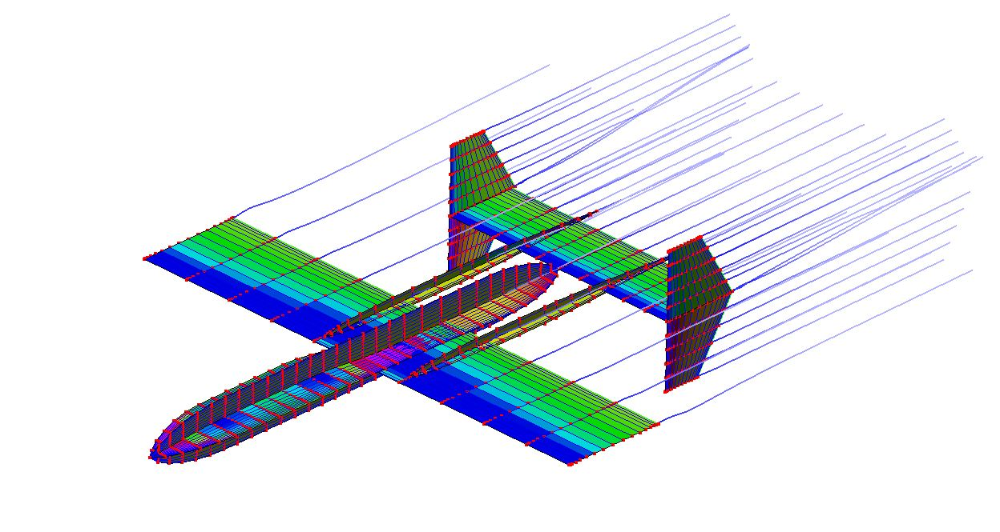
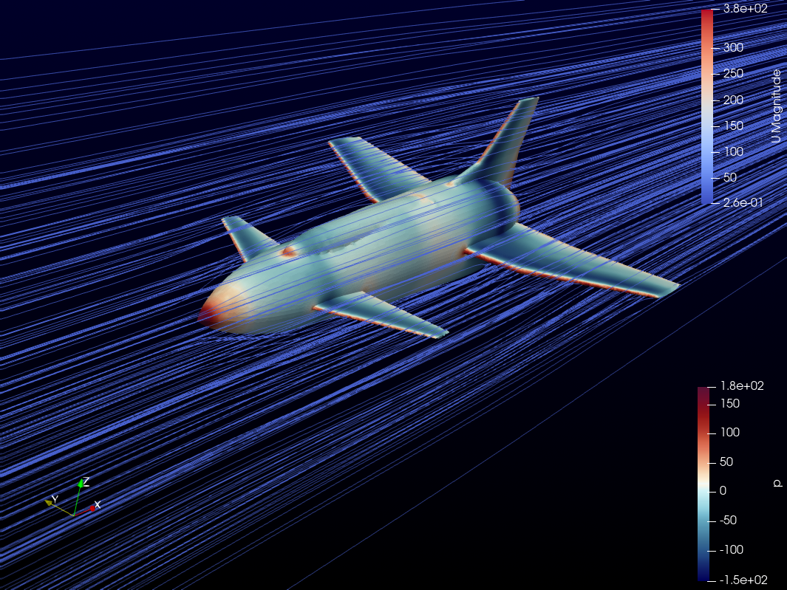
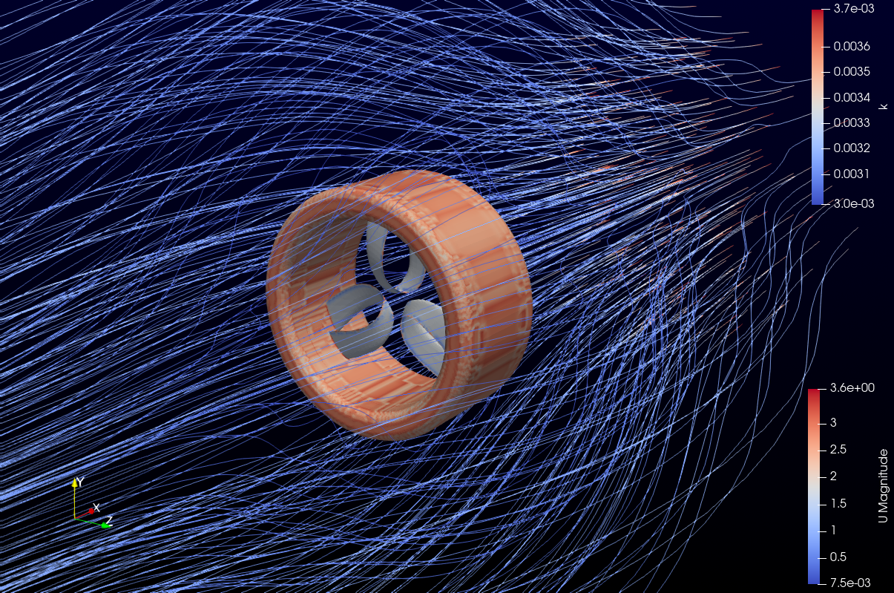
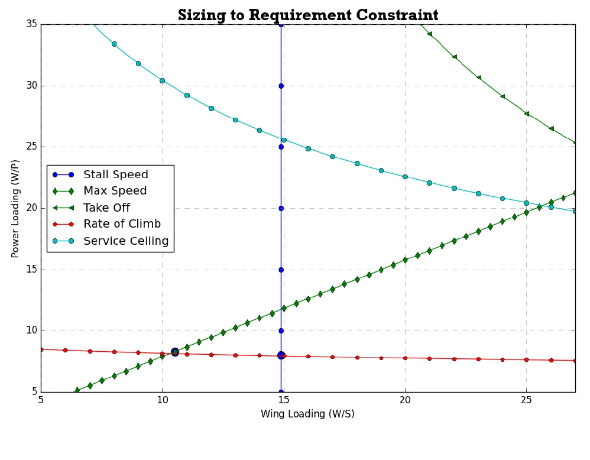
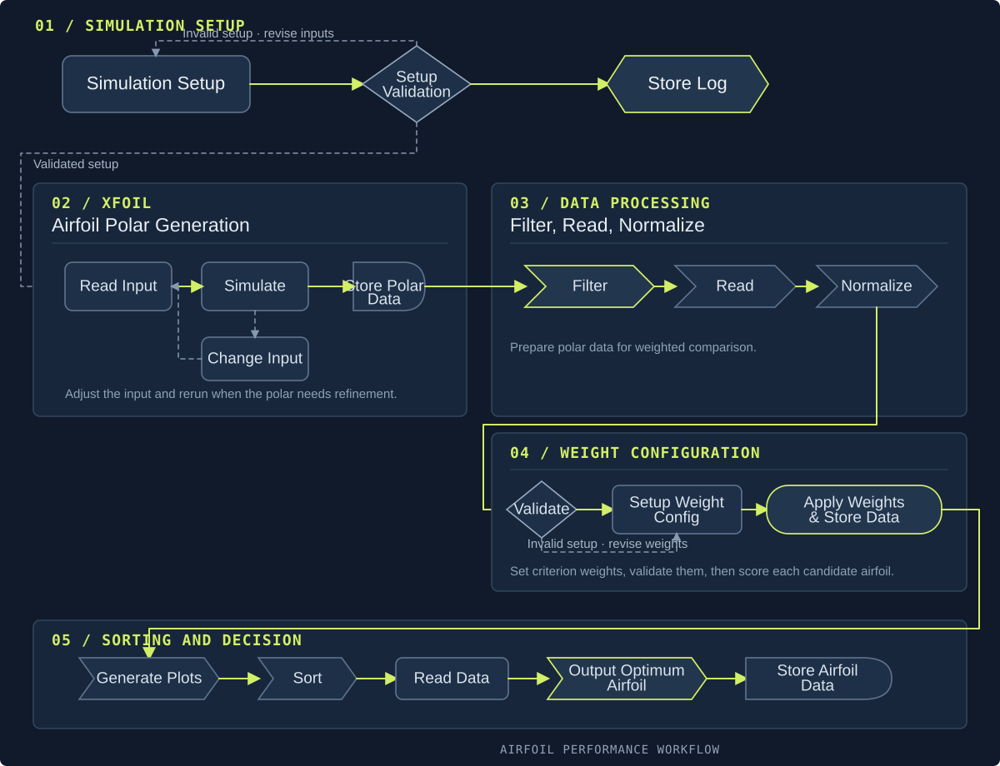
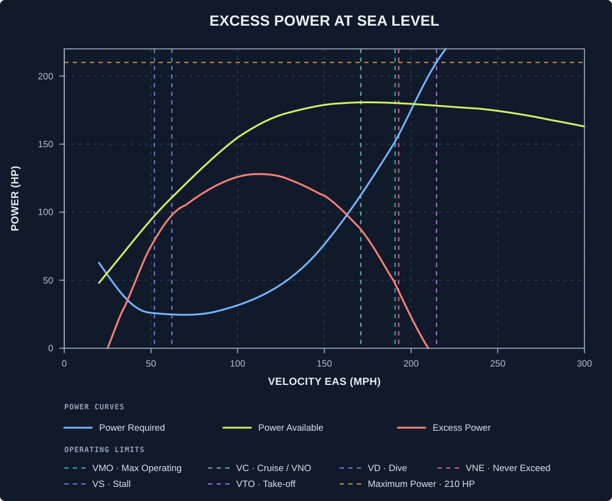
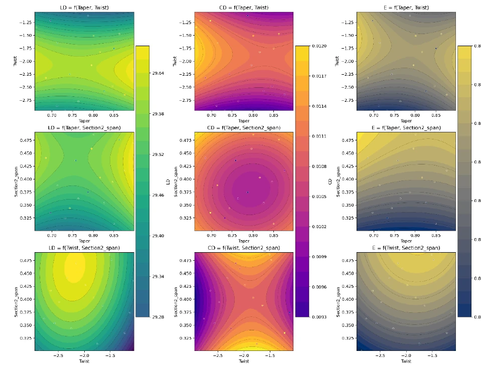
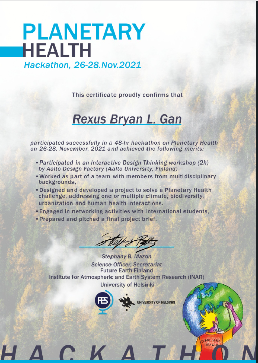
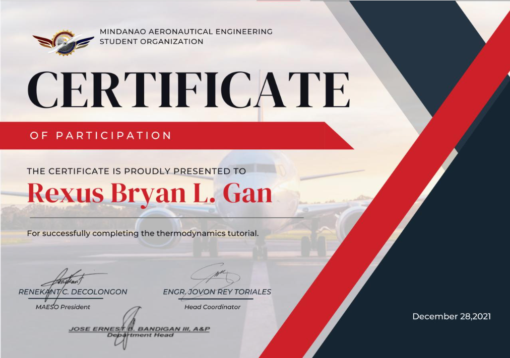

EDUCATION
Bachelor of Science in
Aeronautical Engineering
Mats College of Technology · 2026
AERONAUTICAL ENGINEERING AIRCRAFT DESIGN & CAD
I follow that question through performance sizing and analysis to CAD models and drawings—making each design decision clear and inspectable.
01 / ABOUT
I’m an aeronautical engineering graduate with experience in CAD, aircraft and UAV design, and technical communication.
EDUCATION
Mats College of Technology · 2026
LICENSURE
Licensed Aeronautical Engineer · AELE 2026
AELE 2026
LEADERSHIP & AFFILIATIONS
2021 → 2026Hover or focus a role to see how it contributed to my growth. Tap to open on touch screens.
CORE ENGINEERING SKILLS
01 — TECHNICAL DRAWINGS
Browse the drawings that show the aircraft form, structure, and key details.
TECHNICAL DRAWINGS
01 / AIRCRAFT / GANNET XT0731
Assembly, elevation, and plan sheets
02 / MECHANISM STUDY
Exploded and assembled views
The interactive shaded/mesh model and drawing sheet show the mechanism in assembled and exploded views, making its part arrangement and overall form easier to inspect.
OPEN LANDING GEAR DRAWING03 / PART STUDIES
Dimensioned component drawings
PYTHON / PROJECTS
Python work spanning aircraft design, atmospheric calculations, ID generation, and gesture-driven model viewing.
PYTHON / AIRCRAFT DESIGN PIPELINE
FlightForge brings several aircraft-design tasks into one interface:
I used Codex to help connect interface elements to the analysis scripts.
PYTHON / UAV AIRFRAME
The weight estimate includes the battery and uses fixed-point iteration to resolve the coupled mission-weight calculation. The resulting UAV model was used in OpenVSP to estimate parasitic drag.
The project PDF contains the supporting design work and analysis.
OPEN UAV PROJECT PDFPYTHON APPLICATIONS
Small applications built for practical tasks, engineering calculations, and interactive 3D work.
Generates unique student IDs and QR codes from a CSV roster, then places each person’s details on front and back ID card templates.
A desktop calculator that applies a layered atmosphere model to return pressure, temperature, and density for an entered altitude.
Use hand gestures to pan, zoom, and rotate STL models in a browser-based 3D viewer, with a live webcam preview.
CFD / SIMULATION
Simulation studies exploring airflow around aircraft and propellers, with results shown at the scale and fidelity of each case.
AIRCRAFT / CFDFIDELITY COMPARISON
A paired view of the same aircraft case, showing how the flow is represented at low and high fidelity.



OPENFOAM 01OPENFOAM / CFDTOROIDAL PROPELLER
A flow visualization of the toroidal propeller study, showing the velocity field and surrounding streamlines.
03 — RESEARCH STUDIES
Explore aircraft design, propulsion, and CFD studies, alongside an interactive engineering platform.
Performance-led trainer-aircraft design, from mission constraints and sizing through aerodynamic optimization and CAD.
GANNET-T731 is a trainer-aircraft concept developed from client-defined performance requirements. The study connects mission drivers to constraint-based sizing, then compares propeller performance, airfoil choices, and wing geometry. The mission profile frames the sizing limits, and the figures below show the supporting calculations and plots.
MISSION PROFILE
01 / REQUIREMENT-BASED SIZING
Stall speed, maximum speed, take-off, rate of climb, and service-ceiling requirements define constraints on power loading versus wing loading. Their intersections set sizing limits. The report gives a maximum allowable wing loading of 14.89 lbf/ft² and a maximum power loading of 8.28 lbf/hp under their respective constraints.

02 / AIRFOIL SELECTION
I set custom weights for maximum lift, minimum drag, lift-to-drag ratio, thickness, pitching moment, and angle-of-attack margin for each wing section. This let me compare candidate airfoils by both aerodynamic performance and the greater thickness required near the wing root.

03 / PROPELLER & EXCESS POWER
Excess power is the difference between power available and power required. This sea-level graph compares those curves across airspeed; positive excess power indicates power available for climb and acceleration. Dashed limits mark the operating speeds and maximum power.

04 / WING OPTIMIZATION
Response Surface Methodology compared taper ratio, wing twist, and section span distribution across aerodynamic responses. The report’s R² analysis identifies twist and section span distribution as the strongest influences; taper ratio has a smaller and less consistent effect in this study.

BLENDER ANIMATION / PROJECTS
Python-powered scene automation and a propeller concept, modeled and animated in Blender.
BLENDER / PYTHON
A short animation showing a Python script that imports images into a Blender scene.
WATCH ON YOUTUBEPROPULSION / BLENDER
A Blender animation presenting a rim-driven propeller concept.
WATCH ON YOUTUBEAIRCRAFT / RECOGNITION
Awards recognizing work across aircraft design, feasibility studies, and UAV development.


.png)
.png)
.png)
.png)
.png)
.png)
.png)
.png)
.png)
.png)
.png)
.png)
.png)
.png)
.png)
.png)
.png)
.png)
.png)
.png)
.png)
.png)
.png)
.png)
.png)
.png)
.png)
.png)